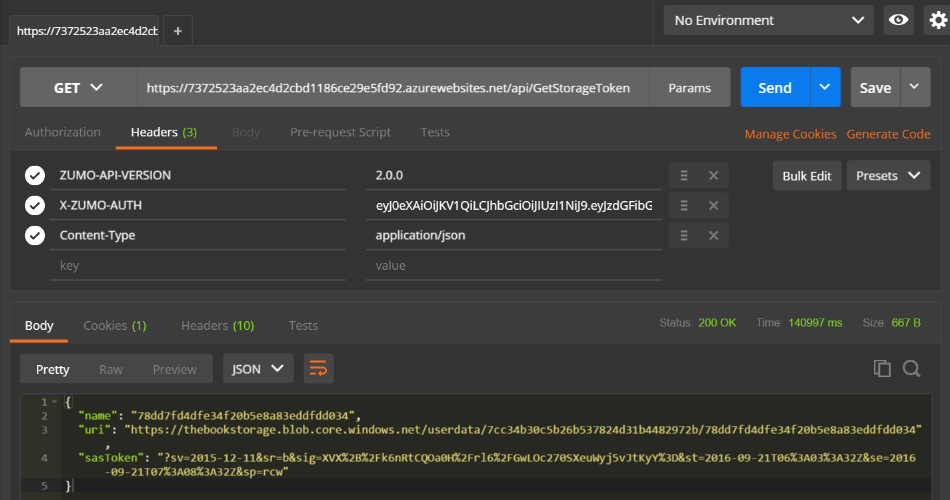

Dealing with Files¶
The most normal tasks for dealing with files are the upload and download of files to blob storage. There is a natural and consistent process to this which makes this recipe very repeatable. First, deal with the things you need before you start:
- Create an Azure Storage Account and link it to your Azure App Service.
- Decide how you want your files organized.
- Create a WebAPI to generate a SAS token for your upload or download.
I've already discussed how to create and link an Azure Storage Account. Blob storage is organized in a typical directory structure. Each directory is called a container, and each file is a blob. In the examples for this section, I am going to store each uploaded file in a container based on the authenticated user. My WebAPI will create the appropriate container and then return an appropriate SAS token.
We haven't discussed custom code yet. We will go much deeper than we do right now. Custom APIs allow us to
write custom code and execute it within the context of the mobile backend. It has access to many of the same
facilities as the rest of the mobile backend - things like app settings, connection strings, and the Entity
Framework structure. To enable custom APIs, you need to alter the App_Start\Startup.MobileApp.cs file so
that the custom APIs are attached to HTTP routes properly:
HttpConfiguration config = new HttpConfiguration();
new MobileAppConfiguration()
.AddTablesWithEntityFramework()
.MapApiControllers()
.ApplyTo(config);
The Custom API is a standard ASP.NET controller with the [MobileAppController] attribute attached to the
class. The [MobileAppController] signals to Azure Mobile Apps that the controller needs to be registered
under the /api endpoint. It also handles API version checking (or at least checks that the ZUMO-API-VERSION
header is set to 2.0.0) and appropriately handles authorization if the [Authorize] attribute is present. The
mapping under the /api endpoint only happens if the .MapApiControllers() extension method is called during
configuration.
Info
Ensure you install the latest version of the WindowsAzure.Storage Nuget package using the NuGet package
Manager before continuing.
When we linked the Azure Storage account, we added a connection string called MS_AzureStorageAccountConnectionString.
This is included in the environment as CUSTOMCONNSTR_MS_AzureStorageAccountConnectionString. We can add a new
Custom API controller in Visual Studio by right-clicking on the Controllers node, then selecting Add ->
Controller... and selecting the Azure Mobile APps Custom Controller option. We can set up our custom API
as follows:
namespace Backend.Controllers
{
[Authorize]
[MobileappController]
public class GetStorageTokenController : ApiController
{
private const string connString = "CUSTOMCONNSTR_MS_AzureStorageAccountConnectionString";
public GetStorageTokenController()
{
ConnectionString = Environment.GetEnvironmentVariable(connString);
StorageAccount = CloudStorageAccount.Parse(ConnectionString);
BlobClient = StorageAccount.CreateCloudBlobClient();
}
public string ConnectionString { get; }
public CloudStorageAccount StorageAccount { get; }
public CloudBlobClient BlobClient { get; }
}
}
The ConnectionString property is the pointer to where the Azure Storage account is located and how to
access it. the StorageAccount is a reference to that Azure Storage account. Finally, the BlobClient
is an object used for accessing blob storage. We can access any WebAPI methods in this class by using
the endpoint /api/GetStorageToken within our mobile client or using Postman.
Azure Storage doesn't have a true heirarchial container system. It does have containers and directories to organize things though, so we are going to use that:
private const string containerName = "userdata";
[HttpGet]
public async Task<StorageTokenViewModel> GetAsync()
{
// The userId is the SID without the sid: prefix
var claimsPrincipal = User as ClaimsPrincipal;
var userId = claimsPrincipal
.FindFirst(ClaimTypes.NameIdentifier)
.Value.Substring(4);
// Errors creating the storage container result in a 500 Internal Server Error
var container = BlobClient.GetContainerReference(containerName);
await container.CreateIfNotExistsAsync();
// Get the user directory within the container
var directory = container.GetDirectoryReference(userId);
var blobName = Guid.NewGuid().ToString("N");
var blob = directory.GetBlockBlobReference(blobName);
// Create a policy for accessing the defined blob
var blobPolicy = new SharedAccessBlobPolicy
{
SharedAccessStartTime = DateTime.UtcNow.AddMinutes(-5),
SharedAccessExpiryTime = DateTime.UtcNow.AddMinutes(60),
Permissions = SharedAccessBlobPermissions.Read
| SharedAccessBlobPermissions.Write
| SharedAccessBlobPermissions.Create
};
return new StorageTokenViewModel
{
Name = blobName,
Uri = blob.Uri,
SasToken = blob.GetSharedAccessSignature(blobPolicy)
};
}
The main piece of work in this API is generating the policy that is then signed and returned to the user as the SAS Token. The mobile device has permission to read, write and create the blob that we have defined for the next 60 minutes. I've provided a policy that starts in the past in case there is a little amount of clock-skew between the mobile device and the backend.
Warn
Container names must be a valid DNS name. The most notable requirement here is between 3 and 64 lower-case letters. Container names are case-sensitive. Check the documentation for full details on naming requirements.
The StorageTokenViewModel is used for serialization purposes:
public class StorageTokenViewModel
{
public string Name { get; set; }
public Uri Uri { get; set; }
public string SasToken { get; set; }
}
We can test this API using Postman. First, generate an authentication token. Then use Postman to
do a GET of the /api/GetStorageToken endpoint:

There are two pieces of information we need here. Firstly, the uri property provides the URI that we are going to
use to upload the file. Secondly, the sasToken is appended to the uri when uploading to provide a link to the
policy. Note that the token start and expiry time are encoded and readable in the sasToken.
In real world applications, this is likely not the right method. We might want to organize the files based on information that the mobile client provides us, for example. We may also want to upload to a specific upload area and then download from another location, allowing processing of the files in between. You may also want to append the uploaded file extension to the file before uploading. There is no "one size fits all" token policy. You must decide on the conditions under which you will allow upload and download capabilities and then provide the appropriate logic to generate the SAS token.
Uploading a File to Blob Storage¶
Once we have the logic to generate a SAS token, we can turn our attention to the mobile clients. We need to do three things for uploading a file to the service:
- Get a reference to the file (as a Stream object).
- Generate a SAS token using the custom API.
- Use the Azure Storage SDK to upload directly to the Azure Storage Account.
You should not upload to a custom API in your mobile backend. This needlessly ties up your mobile backend, causing your mobile backend to be less efficient at scaling. Your mobile backend will likely not have all the facilities that the Azure Storage endpoint has provided either. Azure Storage provides upload and download restarts and progress bar capabilities.
Obtaining a reference to the file that you wish to upload is inevitably a per-platform API. To support this, we need to
add an interface for the API to the Abstractions\IPlatform.cs file:
Task<String> GetUploadFile();